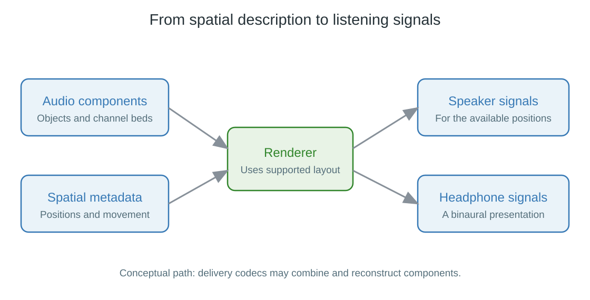

Object-Based Audio
A helicopter travels from the front of the scene to a position above and behind the listener. A channel mix can describe the event by placing changing waveforms in particular speaker channels. An object-based description instead pairs the helicopter's sound with instructions about where it belongs over time.
A renderer translates those instructions into the outputs available for the listening system.

Conceptual path. Delivery codecs can combine and reconstruct components; the drawing does not imply a separate transmitted track for every production object.
Keep the sound and the instructions together
The object's audio describes what the helicopter sounds like. Its metadata can describe position, gain, size or spread, and other rendering properties. Position updates have timing so that the movement matches the sound and picture.
For an illustrative event:
| Time in the event | Object description | Renderer's task |
|---|---|---|
| Beginning | In front of the listener | Generate an appropriate front image |
| Middle | Above the listener | Use supported height outputs or ear cues |
| End | Behind the listener | Move the presentation toward the supported rear image |
The metadata supplies a desired scene relationship; it is not a recording of a particular customer's ceiling speaker. The renderer knows the target arrangement and chooses suitable output contributions.
Render the same description for different systems
For speakers, rendering distributes the object among positions the supported system can reproduce. A sound between two speaker positions can be produced by contributions to both. With a denser supported layout, the renderer has more physical positions available.
For headphones, it can filter the sound into left-ear and right-ear signals, using direction-dependent cues instead of a separate physical driver at each location. The binaural page explains this operation.
A system with fewer outputs does not need to invent new source sounds. It produces another presentation of the same encoded scene, subject to the delivery format's capabilities and the renderer's supported output.
Beds and objects can coexist
Production workflows can use beds: channel-based elements that coexist with movable or separately described objects. A background layer might be convenient to mix as channels while a moving effect benefits from object positioning.
Delivery can then encode, combine, or spatially simplify those production elements to meet its data budget. A consumer decoder need not receive one independent file for every object that existed in the studio. It reconstructs the delivered representation needed for the supported render.
This explains why a basic report on an Emby track can show a compatible 5.1 or 7.1 channel presentation while the bitstream contains additional immersive information.
Decide where the render is finished
If a player renders the scene into ordinary speaker-channel PCM, those samples already express one chosen layout. They remain playable, but the next component cannot recover the original object positions from those channels alone.
An object-aware transport can instead carry the audio and required metadata together to a downstream renderer. Dolby MAT is relevant to one such path.
The useful distinction is between carrying a scene description onward and carrying an already rendered presentation. Both can produce spatial sound; only the former leaves the next renderer the supplied object instructions for adapting it again.